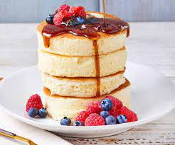

Pancake

Description
A pancake (or hot-cake, griddlecake, or flapjack) is a flat cake, often thin and round, prepared from a starch-based batter that may contain eggs, milk and butter and cooked on a hot surface such as a griddle or frying pan, often frying with oil or butter.
Ingredients
- 2 eggs, separated
- 1 1/2 cups all-purpose flour
- 1/4 cup white sugar
- 2 teaspoons baking powder
- 1/2 teaspoon baking soda
- 1 1/4 cups buttermilk
- 1/4 cup melted butter
- 1/2 teaspoon vanilla extract
Steps
- Beat egg whites in a glass, metal, or ceramic bowl until stiff peaks form.
- Butter enough 3 1/2-inch ring molds to fill your frying pan. Place molds in the pan over low heat. Cover.
- Mix flour, sugar, baking powder, and baking soda in a bowl.
- Combine buttermilk, egg yolks, butter, and vanilla extract in a separate bowl.
Add the flour mixture and stir until batter is fairly smooth.
- Fold egg whites into the batter until combined. Small bits of egg whites still showing is ok.
- Pour about 1/2 cup of batter into each mold and cover the pan.
Cook until bubbles start forming at the top, about 5 minutes.
Flip pancakes in their molds and cook until set, 3 to 4 minutes more.